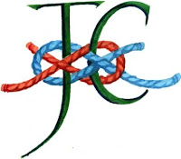
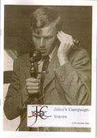
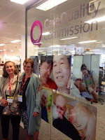
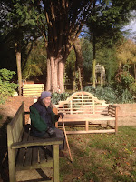

I blame my delay on the power of stories, their power to break their bounds and invade our minds and knock our lives hopelessly off course.
 |
| The John's Campaign logo by Claudia Myatt |
{kind=link}
I considered carrying a short length of bicycle chain in case I needed to padlock myself to the hospital bed but, at that time, it seemed to Nicci and I that changing the system would be simpler. After all, hospitals had been persuaded to welcome parents to support their sick children so surely when the equivalence of the situations was pointed out to them, it would be perfectly straightforward for rules to be amended so that the family carers of people with dementia would be equally welcome to support them...? Think of it as pay-back time: that generation had campaigned successfully for change to parents' visiting in the late 1950s and 60s (when I was a child) now that they are in their 80s and 90s, overwhelmed by what feels like an epidemic of cognitive impairment and frailty, surely the least we children can do is be there with them as often as we can? "Until there's a cure, there's care." Sometimes we simply can't be there - we have our own lives to lead and conflicting responsibilities -- but when we can, and if we are willing, it is surely MADNESS to put any official impediment in our way?
 |
| John's Campaign Voices |
{kind=link}
Thousands of people were touched by this single tale, beautifully told, and they came forward with stories of their own. Recently we held a Conference (generously sponsored by Imperial Healthcare NHS Trust, whose lead dementia nurse had listened to Nicci's words with open ears). It was a memorable day but I've a feeling that the sessions that will stay in the hearts as well as the minds of all those who attended were those where people told of their experiences. My son Bertie, who is our webmaster, produced a lovely little booklet, Voices, to capture some of these tales. You can download it as a pdf or go to the YouTube channel on our website and listen to people reading out their own stories. I defy you not to be affected.
 |
| We met with such understanding and good will when we visited the CQC. But can they even make these changes? |
{kind=link}
So we thought. We'd even planned a meal out together with our wonderful, long-suffering and supportive partners to mark the occasion as we stepped back.
But the stories kept on coming. I was at a conference in Worcestershire where several people came up in the course of the day with stories of being denied access to their own relatives in care and nursing homes. I couldn't bear to listen -- the residential sector is huge. Nicci and I couldn't begin to take it on. But then there was that Panorama programme and then, most powerfully of all, a woman called Brenda got in touch. And what Brenda said, eloquently and undeniably, was that the improvements sparked by our campaign had (almost) made things worse. She and her partner Donald had experienced the gradual humanisation of access and care as their local hospital in the Isle of Wight embedded the principles of John's Campaign but then, when Donald was transferred to a nursing home where Brenda was no longer welcome, the shock of separation was grievous. Worse than it had been before? I hope not, but Brenda's account was enough to force us to accept, what we knew was true, that the change in attitude, the breaking down of barriers cannot be restricted to any single sector, it must be a universal social change. (We have postponed that dinner - but we have not cancelled it.)
 |
| My mother's nursing home pledges to welcome and work with families at all times. And they do. |
{kind=link}
The Isle of Wight Press has picked it up in two articles, which function as chapters in an on-going tale. file:///C:/Users/GT6/Downloads/IWM1Dec02P008.pdf
file:///C:/Users/GT6/Downloads/IWM1Dec02P008.pdf
Clearly there must be a third chapter and a happy ending, though it'll come too late for John Gerrard or for Donald Simmonds.
Julia Jones's most recent book is Beloved Old Age - and What to Do About It
(and the real reason she's late this month is she's in the throes of a new one - and it's NOT about dementia)